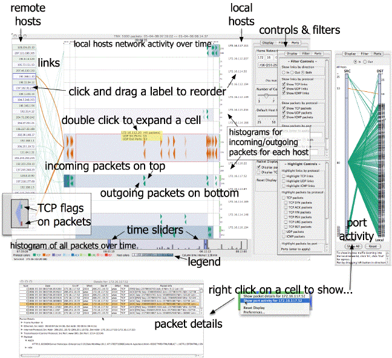

TNV shows remote hosts at the left of the screen and local hosts in a matrix of host rows and time columns at the right with links drawn between them. The matrix cells' colors represent the number of packets for that time interval. Packets can optionally be superimposed on the aggregated local host cells.
To get started with TNV immediately, refer to the Quick Start menu. The menu items at the top control the opening, importing saving, exporting, and closing of files or a MySQL database connection, preferences, and capturing live packets. The visualization is organized by time along the horizontal axis and by host IP address along the vertical axis. Interaction is controlled by the mouse for reordering the matrix, selecting cells, and showing tooltips. The display panel, to the right of the visualization, contains controls for manipulating the display and for showing port activity for selected hosts. The detail window shows the details of the packets for selected hosts. The top section lists all packets associated with that machine IP address for a selected time interval in a sortable table. Below the table are individual packet details that are displayed when the user selects a row in the table.

- Remote hosts (those not on the network you defined as 'home') are shown at the left, local hosts are shown at the right. By default, hosts are ordered (top to bottom) in their arrival order.
- Links are drawn in the area between local and remote hosts, color coded according to protocol. Hover the mouse over a link to highlight the associated hosts and show a summary of the links in a tooltip. Links are drawn in a separate thread, so on slower machines or machines without a lot of memory, it may take some time to update the links. Every time the time slider is moved, the links need to be recalculated.
- The local host matrix is divided by host rows and time interval columns. Each cell represents a time interval (shown in the legend), with the color of the cell representing the aggregated packet frequency during that time interval. Hover the mouse over a host cell to show the IP address or DNS name of the host and the frequency of packets in that cell in a tooltip.
- Packets are shown as triangles with the incoming packets drawn at the top and outgoing packets drawn at the bottom of each cell. Optionally, TCP packets can show the flags associated with each packet drawn as small rectangles on the backside of the packet triangle, coded by color.
- To the right of each local host row is a histogram showing the total number of incoming (top) and outgoing (bottom) packets for each host in the entire data set.
- A time slider at the bottom of the screen controls the currently viewable area. A histogram of aggregated packet activity is drawn in the background of the slider.
- Port activity is shown to the right side of the screen (in a tab window).
- To change the order of local or remote hosts, click and hold the mouse button on the host's label and drag the label up or down and release the mouse button when in desired location.
- To highlight the hosts associated with a link, hover the mouse over a link.
- To select a remote host or local host and highlight the links associated with that host, double click on the host's label. Double click again to deselect.
- To select a local host cell, single click within the cell. Single click again to deselect, of click on an empty cell.
- To expand a local host cell to 'zoom in' to that cell, double click within the cell.
- To show the port activity for a local host cell, right click on the cell and choose the option to show ports to the right of the screen.
- To show the packet details for a local host cell, right click on the cell and choose the option to show packet details in a new window.
- To increase or decrease the amount of time shown in the display, move the handles in the time slider closer together (zooming in) or farther apart (zooming out). This is the most computationally intensive operation and can result in sluggish performance on slow machines or machines without a lot of memory.
To show all port activity for the entire data set, choose menu 'View' -> 'View All Port Activity' or open the 'Ports' tab and push the button to 'Show All'.
To show only the selected local hosts' port activity, right click on a local host cell and select the option to show port activity for a selected host or hosts. To the right of the window the port activity will be shown. You can choose to either show incoming or outgoing packets for the selected host. Source ports are shown at the left, destination at the right. The height of the boxes along the source and destination axes shows the relative activity for each of the ports.
To show ingress traffic (coming into the local network), click 'In', click 'Out' for egress. Pan by dragging left button in direction to pan. Zoom by dragging right button (towards right for in, left for out) or using mouse wheel. Use the reset button to reset the zoom and pan to the default.
- To import saved tcpdump data, choose menu 'File' -> 'Import pcap file..' and select the file that contains the tcpdump, winpcap, or ethereal data (or any other pcap data file).
- To export the currently loaded data to a pcap file, choose menu 'File' -> 'Export pcap file..' and select the directory to save the pcap data file.
- To open a previously saved TNV database, choose the menu 'File' -> 'Open saved TNV database..' and select the appropriate directory (TNV uses HSQLDB as its embedded database, which saves three files in a directory, you must choose the directory itself, not one of those files).
- To save the currently loaded data, choose menu 'File' -> 'Save TNV data..' and select the appropriate directory to save the database into.
- To view all of the packet details for the entire data set, choose menu 'View' -> 'View All Packet Details'.
- To view the port activity for the entire data set, choose menu 'View' -> 'View All Port Activity'.
- If it is necessary to reset the display, choose menu 'View' -> 'Reset Display'.
- To change the preferences, choose menu 'View' -> 'Preferences'.
- To begin capturing live data, choose menu 'Capture' -> 'Capture Packets...', then select the desired options on the packet capture dialog (Be sure you have permission to capture packets if running on Linux or Mac OS X).
- The preferences panel controls various options that are saved out and reloaded on each restart.
- The first tab gives options for coloring of links and packets according to protocol.
- The second tab controls the coloring of local host cells, based on the number of packets for the time period. These are arbitrary right now, but a future version will allow you to define your own.
The display panel controls various options that are saved out and reloaded on each restart. Hover your mouse over a control to find out more information. Here is where you set your home network (set the netmask prior to entering the network octets); click set to apply, but you will need to close and reopen the data set for home network changes to take effect. You can dynamically set the number of columns and default local host height (this may decrease based on available display space). You can choose to show links as straight lines or curved lines, to always show packets, which are drawn as small triangles within the local host cells, and whether or not to draw indications of TCP packets' TCP flags. To reset the display to the initial setting, click the Reset button.
The filter panel controls various options for filtering (at top) and highlighting (at bottom) the data. Hover your mouse over a control to find out more information. Controls for links are shown at the top, packets at the bottom for each subpanel. You can choose to show or highlight links by direction protocol. You can choose to show or highlight packets based on protocol, port numbers, packet size (i.e., total length), and time to live. All filters are applied as if they are OR-ed. (Note: to apply highlighting for certain ports, enter a comma delimited list of the ports and then type enter.)
To show all details for the entire data set, choose menu 'View' -> 'View All Packet Details'.
To show only the selected hosts details, right click on a host cell and choose to show the details of the packets associated with that host for the selected time period(s). To choose multiple hosts or time periods, select multiple cells and right click. The top portion is a summary of the packets in a sortable table. To sort the table, click on a column header. The bottom shows the details of individual packets when they are selected in the table.
Please send feedback and comments to jgood@users.sourceforge.net
http://tnv.sourceforge.net/